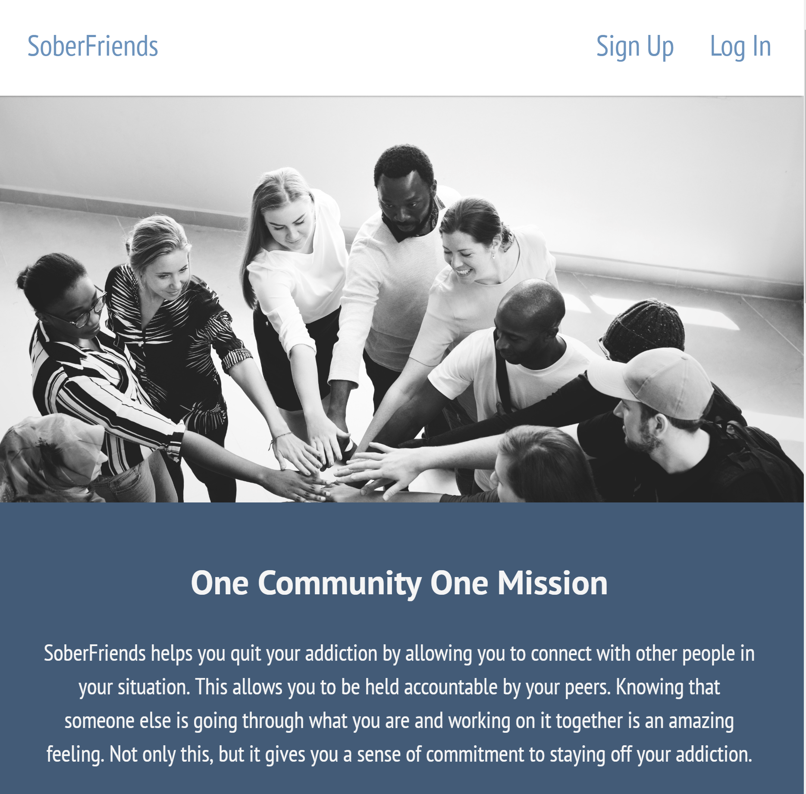

About
Who is Arman Bhimani?
I am a full-stack developer that loves solving problems! The harder the problems the better. I am passionate about programming both on the front-end and back-end. However, I have a burning passion for front-end development. It is so cool to visually see the ideas I have coming to life!
My hobbies outside of coding are taking long walks with my dog, reading, and spending time with loved ones. I also love helping other people (code and just life). It not only makes me feel good, but also reinforces my own learning!
Skills
Projects
SoberFriends
SoberFriends aims to help people quit their addiction by tracking their progress, and having a community of people going through the same thing for support.
Technologies Used
Dream-Dogs

Dream-Dogs helps owners struggling to provide for their dogs to find a safe new home.
Technologies Used
WeatherorNot

Search a city and get results back for the weather and events happening in that city!